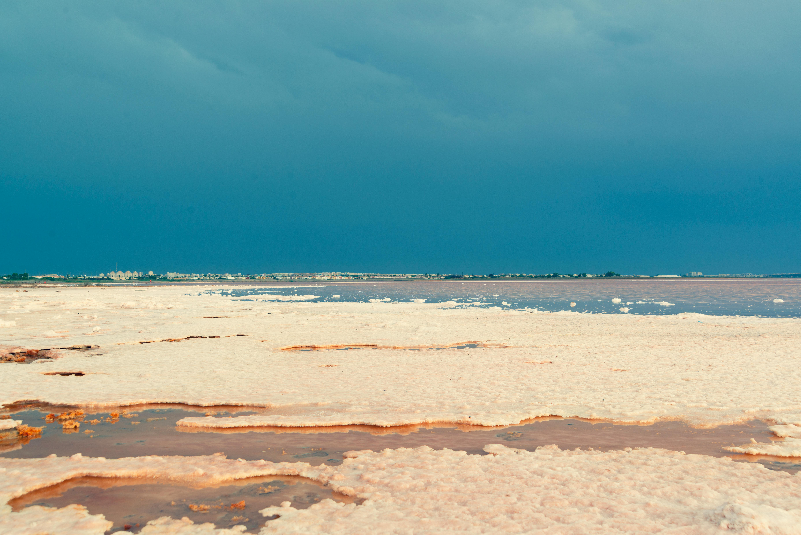

Estd. 2025 · Sambhar Lake, Rajasthan
Our Story
Born where the desert meets the water.
Shaped by four thousand years of geology and a thousand years of human hands.

The Source
A Lake Like
No Other on Earth
Eighty kilometres west of Jaipur, in the rain shadow of the Aravalli Hills, lies Sambhar Lake — Sambhar Sarovar — India's largest inland saltwater lake and a Ramsar wetland of international ecological importance.
Fed by five rivers and ancient underground springs, this body of water has been concentrating minerals from the surrounding geology for over four thousand years. Groundwater, heavy with calcium, magnesium, potassium, and 54+ trace elements, rises through alkaline soil by capillary action. The Rajasthani sun does the rest.
What remains in the brine beds is not just salt. It is a crystallised record of the land itself.
- India's largest inland saltwater lake
- Ramsar Convention wetland since 1990
- Fed by five rivers and underground springs
- Home to Dunaliella salina microalgae
- Natural pH above 9 from geological mineral concentration
A Living Ecosystem
Where Flamingos Come
to Feed
Each winter, tens of thousands of flamingos and migratory birds arrive at Sambhar Lake. They are drawn by the same mineral-rich brine that makes Puresol what it is. The algae they feed on — Dunaliella salina — is the same organism that gives our salt its rose hue and its natural iodine.
The lake's designation as a Ramsar Convention wetland is not a bureaucratic detail. It means its ecology is formally protected under international treaty — that the industrial development, runoff, and contamination that mark most salt sources is not permitted here. Sambhar's brine is protected by law.
Ancient Knowledge
Lavanam — Salt in the Vedic Tradition
In Sanskrit, salt is Lavanam. In Ayurveda — India's ancient system of holistic medicine — Lavanam is one of the six essential tastes (Shadrasa) required for complete nutrition and physical balance. It is not a condiment. It is a medicine.
The Charaka Samhita — one of the foundational Ayurvedic texts — describes several varieties of salt and their therapeutic properties. It distinguishes between sea salt and mineral salts from inland alkaline sources. The inland salts were considered superior: gentler on digestion, more alkaline, richer in trace minerals, better for long-term health.
Sambhar Lake salt appears in Ayurvedic pharmacopoeia by name. What Vedic physicians prescribed through centuries of observation, modern nutritional science has now confirmed through measurement. The lake is the same lake. The mineral profile is the same profile. The only thing that changed is our ability to quantify it.

Heritage
A Thousand Years of Salt
Sambhar Lake salt funded kingdoms, sparked colonial conflicts, and sustained entire communities. This is the ground Puresol stands on.
Salt harvesting begins at Sambhar Sarovar. Vedic texts record Lavanam as a mineral food of healing and nourishment. The Suryatapa sun-curing method is established.
The Chahamana (Chauhan) Rajput dynasty controls the lake. Salt revenue funds the courts of Rajputana for centuries. Sambhar becomes the economic heartbeat of the region.
Sambhar salt becomes the most prized commodity across the subcontinent — traded to the Deccan Plateau and the Persian Gulf. Emperors levy salt taxes here for generations.
The East India Company seizes salt revenues. Sambhar becomes contested territory. Harvesting communities preserve the ancient Suryatapa process through occupation and extraction.
Ramsar Convention recognises Sambhar Lake as a wetland of global ecological importance. Dunaliella salina and its ecosystem are formally protected under international treaty.
Puresol is born. Agrigore Ventures brings Sambhar Lake's ancestral salt to modern tables without altering a single step of the thousand-year process.
The Process
Suryatapa —
Cured by the Sun
Suryatapa — from Sanskrit, Surya (Sun) and Tapa (Austerity) — is the name for the ancient practice of sun-curing Sambhar Lake salt. It is not evaporation. It is a 9-to-12-month process of slow crystallisation under open sky.
Industrial salt is produced in days through high-heat evaporation and chemical refining. Puresol takes up to twelve months under open Rajasthani sky. This patience is the mechanism by which minerals lock into the crystalline structure in biologically active, bioavailable forms the body can actually use.
Brine from Sambhar Lake is channeled into shallow sun-pans. Dunaliella salina colonises the brine, contributing iodine, beta-carotene, and a living pink hue. Over months, crystals form. Then they are hand-collected by the salt harvesting families of Sambhar, cleaned, and packed.
- Brine channeled from the lake and subsoil springs
- Dunaliella salina iodises crystals naturally
- 9–12 months of open-air sun-curing
- Hand-collected from Sambhar Sarovar
- Zero industrial processing at any stage

Principles
Three Commitments.
No Compromise.
Absolute Purity
Zero additives, zero bleaching agents, zero anti-caking chemicals, zero microplastics, zero artificial iodisation. Every grain is what nature made. Nothing more, nothing less.
True Sustainability
Solar-powered evaporation. Hand-harvesting with traditional tools. No industrial machinery on the lake beds. Recyclable packaging. Our ecological footprint is as clean as the salt itself.
Community First
The salt harvesting communities of Sambhar have practised Suryatapa for generations. Puresol directly supports their livelihoods and preserves knowledge that cannot be automated or replicated.
The Company
Agrigore Ventures Pvt. Ltd.
Puresol is a product of Agrigore Ventures — founded on a single conviction: nature's most fundamental foods deserve the most uncompromising standards.
Sambhar Lake's alkaline salt is one of India's most extraordinary natural resources. We saw that it was being ignored by a market flooded with industrial sodium chloride and mined mineral salts from Pakistan. We did not create something new. We preserved something that was already here — and made it available to people who care about what goes into their food.
The lake is the same lake it has always been. The process is the process that Vedic physicians documented. The minerals are the minerals that have been forming here for four thousand years. We simply carry it to your kitchen intact.

Leadership
The People Behind Puresol
Shubham Sachan
Director
Niteesh Joshi
Director